계모인데, 딸이 너무 귀여워 같은 웹툰 추천

계모인데, 딸이 너무 귀여워 · 모구랭 / 이르
계모인데, 딸이 너무 귀여워 재밌게 봤다면 이 웹툰들도 좋아할 거예요. 같은 장르이면서 힐링, 개그, 로판 같은 요소가 겹치는 작품을, 겹치는 요소가 많은 순서로 20개 골랐어요.
2026-10-01 기준 · 네이버웹툰·카카오웹툰·레진코믹스 · 성인 작품 제외
내 취향으로 직접 골라 추천받기 →-
1
 카카오웹툰
카카오웹툰버림받은 황자의 유령 신부
이름, 없음. 나이, 100년 이후로 세 보지 않음. 외모, 거울에 안 비쳐서 모름. 고저택에서 유령으로 산 지도 어언 300여 년. 혼자 편하게 살고 있었을 뿐인데 갑자기 들이닥친 인간들이 강제로 영혼 결혼식을 해버린 것도 모자라 상대가 8살짜리…
힐링개그로판판타지로맨스카카오웹툰에서 보기 → -
2
 카카오웹툰
카카오웹툰후궁계약
사신이란 별명으로 불리는 자객 예서는 어느 날 수상한 남자에게 거액의 비밀 의뢰를 받는다. "성국 황제의 후궁으로 입궁해 다오. 그게 내 의뢰이다." 뭐야 이거? 자객을 후궁으로 고용해서 뭘 하려고? "왜. 존귀하신 황제께서 미녀 자객한테 한번 먹혀…
개그로판판타지로맨스카카오웹툰에서 보기 → -
3
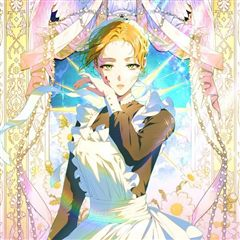
카카오웹툰힘을 숨기고 즐기는 평화로운 하녀 생활
영웅 안데르트. 스스로를 희생해 대전쟁을 끝마친 위대한 검사. 희대의 영웅 중 한 명. ...이지만 실상은 죽은 남동생의 신분을 사용한 남장 여자. 그게 바로 나였다. 그런데. "어?" 죽은 후 4년이 지나서 되살아났다? 가진 것이라고는 몸뚱아리뿐이…
개그로판판타지로맨스카카오웹툰에서 보기 → -
4카카오웹툰
집 잘못 찾아오셨어요, 악역님
아무래도 나는 이웃집의 사연 많은 엑스트라인 모양이다. 원작의 전개대로라면 이제 여주인공이 치명상을 입고 쓰러진 악역을 구해주고 그 대가로 미남 악역의 광적인 집착을 받아야 했다. 그런데 어째서인지 악역 서브남이 내 집 앞에 기절해 있는 것이 아닌가…
개그로판판타지로맨스카카오웹툰에서 보기 → -
5카카오웹툰
그 공작의 아내 집착
"발정했습니다. 그쪽의 암말이, 제 수말에게." 어느 날, 우연한 마차 사고로 맞닥뜨린 남자에게 계약결혼을 제안받았다. 이곳은 직접 19금 팬픽까지 쓸 만큼 사랑했던 작품 속 세계. 남주도 여주도 위험한 인물들이니, 조용히 숨어나 살 생각이었는데 뜬…
개그로판판타지로맨스카카오웹툰에서 보기 → -
6
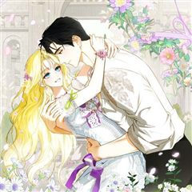
카카오웹툰제가 어딘가 빙의를 한 것 같은데요
각박한 현실도 거지 같은데, 그 끝이 과로사라니! 이럴 거면 연애나 잔뜩 할걸 후회하기도 잠시, 어라.... 거울 속 당신은 누구신가요? 조금 당황스럽긴 하지만 이 몸... 엄청 예쁘잖아! 로맨스 판타지 소설에 빙의된 것 같은데 이왕 이렇게 된 거…
개그로판판타지로맨스카카오웹툰에서 보기 → -
7
 카카오웹툰
카카오웹툰여보, 왜 이혼은 안 되나요?
막장 치정 로맨스 소설 속 악녀 '오필리아 리젠' 으로 빙의한 나. 주인공들의 계략에 놀아나 비참한 최후를 맞이하기 전에 하루빨리 오필리아의 남편 '실베스터 리젠' 과 이혼하고 광명을 찾고 싶은데, 남편 놈이 내건 조건이 가관이다. “오필리아, 이혼…
개그로판판타지로맨스카카오웹툰에서 보기 → -
8
 카카오웹툰
카카오웹툰이상한데 효과적인 악녀 생활
제국의 최고 명문 프렐라이 공작가의 막내 손녀이자 천재 마법 공학 박사인 키아나 프렐라이. 콩가루 집안에서 가출한 후 촌구석 상아탑에 처박혀 논문 찍는 기계처럼 연구에 매진한 지 7년. 갑자기 들이닥친 군사들에 의해 제국으로 끌려갔다. 아니, 할아버…
개그로판판타지로맨스카카오웹툰에서 보기 → -
9
 카카오웹툰
카카오웹툰마왕의 아이로 살아남는 법
세상이 멸망했다. 또다시. 천 번에 가까운 회귀를 거듭하며 세계 멸망을 막아 보고자 아무리 용을 써도, 나는 결코 결말을 바꿀 수 없었다. 이제는 지친다. 회귀도 지긋지긋하다. 이번에는 몇 살로 회귀할까. 회귀 따위, 다시는 하고 싶지 않은데. “으…
개그로판판타지로맨스카카오웹툰에서 보기 → -
10
 카카오웹툰
카카오웹툰결혼도 안 했는데 무슨 이혼인가요, 폐하
대륙의 절반이 들끓었던 영토 전쟁이 끝난 후로 십 년. 종전의 영웅, 아이작 메저린의 영지에 순금을 녹인 인장이 박힌 문서가 날아들었다. 아직 결혼도 안 한 외동딸 클리샤 메저린에게 보내온, 황제의 <이혼서>. 느닷없는 이혼으로도 미치고 팔짝 뛸 노…
개그로판판타지로맨스카카오웹툰에서 보기 → -
11
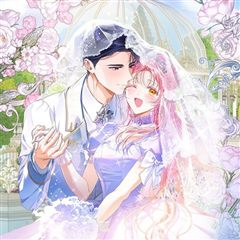
카카오웹툰시한부 남편인 줄 알았습니다만?
“기한은 6개월. 그 안에 반드시 네 남편을 죽이거라.” 신혼 첫날밤, 시어머니의 명으로 남편을 죽이는 막장 조연 '앨리스'의 몸에 빙의했다. 돈에 팔려 산송장 같은 공작에게 시집온 줄 알았는데, 웬걸, 이 공작 몸도 좋고 잘생겼잖아. 죽이기엔 아까…
개그로판판타지로맨스카카오웹툰에서 보기 → -
12카카오웹툰
여보, 왜 당신이 후회해요?
몰래 남편의 정부를 만났다. 어여쁘고 가녀리고 사랑스러운 그녀, 세이라. “공작님과 절대 헤어지지 않을 거예요!" “바로 그 자세에요.” "ㄴ, 네?" 귀족에, 친정도 잘 살고, 외모도 예쁜 뭣하나 꿀리지 않는 삶 타레이아로 빙의 했으니 내 인생 단…
개그로판판타지로맨스카카오웹툰에서 보기 → -
13
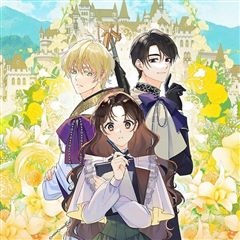
카카오웹툰원작은 모르겠고, 먹고 살기도 바쁩니다
결혼한 지 한 달 만에 마물 사냥을 나갔다가 시체로 돌아온 영주 남편. 그 충격에, 소설에 빙의했다는 걸 깨닫게 된 페넬로페. 하지만 빙의라는 사실을 받아들일 틈도 없이 영지 일들이 몰려왔다! "순무 가격이 또 내려갔다고 합니다." “영지민들이 겨울…
개그로판판타지로맨스카카오웹툰에서 보기 → -
14
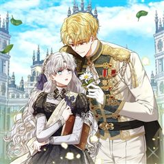
카카오웹툰말단 공무원은 출세가 하고 싶어서
제국의 황실 공무원이자, 답 없는 부서의 말단 공무원인 나미아 로아피. 어느 날 자신이 책 속에 환생했음을 깨닫고, 황태자가 암살당하고 제국 전쟁이 펼쳐지는 암울한 미래를 알게 된다. 전쟁에 휘말리게 되면 자신 같은 엑스트라는 죽게 되는 건 당연한…
개그로판판타지로맨스카카오웹툰에서 보기 → -
15
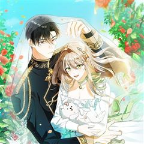
카카오웹툰전 그냥 내 집 마련이 꿈인데요?
"우리 헤어지자." 남자 친구에게 호구짓 당하고, 가족들에게 돈만 뜯기던 이샤엘. 심한 핍박을 견디지 못해 죽음에 이르게 되었을 때 이샤엘은 깨닫는다, 자신이 두번의 환생을 겪었음을. "이전과 같이 살지 않겠어, 난 이제 새 인생 살러 갈 거야!"…
개그로판판타지로맨스카카오웹툰에서 보기 → -
16
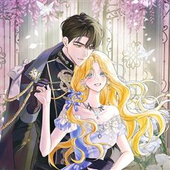
카카오웹툰제 유서는 그런 뜻이 아니었는데
피폐 소설 속 마수로 변이하는 남주의 약혼녀에 빙의했다. 원작 초반에 죽는 시한부 악녀 역할이다. 그래서 어떡했냐고? 빛보다 빠르게 도망쳤다. 그리고 잡혔다……. 하지만 내 사전에 포기란 없다! 남주의 경계만 풀면 또 도망칠 수 있다는 생각에 열심히…
개그로판판타지로맨스카카오웹툰에서 보기 → -
17
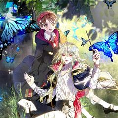
카카오웹툰구경하는 들러리양
깨어나보니 내가 가장 좋아하는 소설 속에 들어와 버렸다! 그런데 주인공도 악역도 아닌… 눈물 나는 분량의 ‘들러리’라고? 현실에 치여사는 스물 다섯 학원 강사 김혜정! 그런데 즐겨 읽던 소설 <야수의 꽃> 세계로 떨어져 소설 속 인물 ‘라테 엑트리’…
개그로판판타지로맨스카카오웹툰에서 보기 → -
18
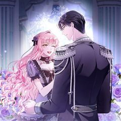
카카오웹툰아드님 말고 아버님이요
똥차 남편 때문에 속앓이하다 죽는 조연에 빙의했다. 결혼을 피할 수 없다면, 남편을 바꾸면 되잖아? "좋아요, 결혼할게요." "현명한 판단입니다. 그럼 혼례는 약식으로 치르도록 하지요. 이후 당신은 제가 부를 때까지 영지로 내려가서 안주인답게 처신해…
개그로판판타지로맨스카카오웹툰에서 보기 → -
19
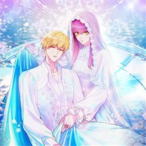
카카오웹툰시한부 황제의 주치의입니다
이번에도 황제의 죽음을 막을 수 없었다. 대체 왜, 왜 또 죽는 거냐고요! 황궁의로서 황제를 살리지 못한 죄로 사형당한 세리나는 3번째 회귀를 통해 또다시 입궁하게 된다. 황궁의를 거부해도 사형, 치료를 못 해도 사형이라면 할 말은 다 해보자 결심한…
개그로판판타지로맨스카카오웹툰에서 보기 → -
20
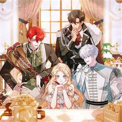
카카오웹툰TOP 100 영애
로맨스 판타지 게임에 100명의 영애가 빙의됐다. 각자의 활약에 따라 게임 내 랭킹이 결정된다! 그렇게, 피 튀기는 경쟁이 시작됐……을 줄 알았는데?! "현생도 피곤해 죽겠는데 중세에서 웬 경쟁이냐. 어떻게 얻은 빙의 기회인데, 당연히 이 세계를 즐…
개그로판판타지로맨스카카오웹툰에서 보기 →